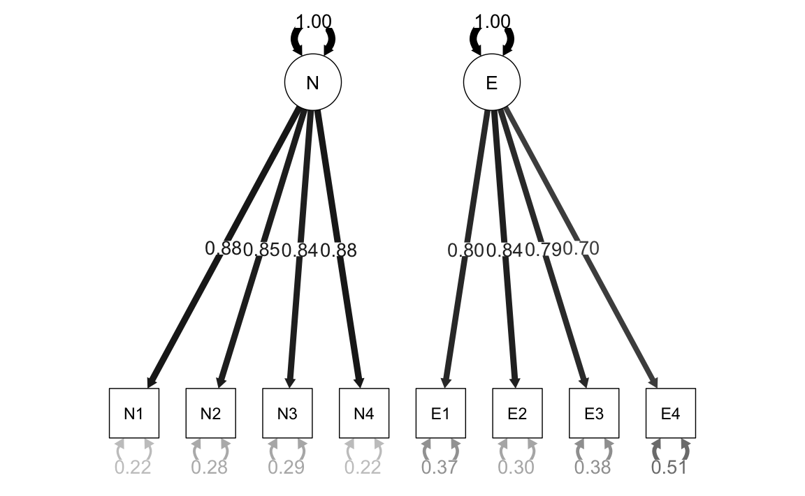

8.1 Modello multifattoriale: fattori ortogonali
La teoria dei due fattori ha orientato per diversi anni le ricerche sull’intelligenza, finché Thurstone (1945) non propose una sua modifica, conosciuta come teoria multifattoriale. Secondo Thurstone la covariazione tra le variabili manifeste non può essere spiegata da un unico fattore generale. Invece è necessario ipotizzare l’azione causale di diversi fattori, definiti comuni, i quali si riferiscono solo ad alcune delle variabili considerate.
Il modello plurifattoriale assume che ciascuna variabile manifesta sia espressa come funzione lineare di un certo numero \(m\) di fattori comuni, \(\xi_1, \xi_2, \dots, \xi_m\), responsabili della correlazione con le altre variabili, e di un solo fattore specifico (termine d’errore), responsabile della variabilità della variabile stessa. Per \(p\) variabili manifeste, \(Y_1, Y_2, \dots, Y_p\), il modello fattoriale diventa quello indicato dal sistema di equazioni lineari descritto di seguito. Idealmente, \(m\) dovrebbe essere molto più piccolo di \(p\) così da consentire una descrizione parsimoniosa delle variabili manifeste in funzione di pochi fattori soggiacenti.
Le variabili manifeste \(Y\) sono indicizzate da \(i = 1, \dots, p.\) Le variabili latenti \(\xi\) (fattori) sono indicizzate da \(j = 1, \dots, m.\) I fattori specifici \(\delta\) sono indicizzati da \(i = 1, \dots, p.\) Le saturazioni fattoriali si distinguono dunque tramite due indici, \(i\) e \(j\): il primo indice si riferisce alle variabili manifeste, il secondo si riferisce ai fattori latenti.
Indichiamo con \(\mu_i\), con \(i=1, \dots, p\) le medie delle \(p\) variabili manifeste \(Y_1, Y_2, \dots, Y_p\). Se non vi è alcun effetto delle variabili comuni latenti, allora la variabile \(Y_{ijk}\), dove \(k\) è l’indice usato per i soggetti, sarà uguale a:
\[\begin{equation} \begin{cases} Y_{1k} &= \mu_1 + \delta_{1k} \\ &\vdots\\ Y_{ik} &= \mu_i + \delta_{ik}\\ &\vdots\\ Y_{pk} &= \mu_p + \delta_{pk} \notag \end{cases} \end{equation}\]
Se invece le variabili manifeste rappresentano la somma dell’effetto causale di \(m\) fattori comuni e di \(p\) fattori specifici, allora possiamo scrivere:
\[\begin{equation} \begin{cases} Y_1 - \mu_1 &= \lambda_{11}\xi_1 + \dots + \lambda_{1k}\xi_k \dots +\lambda_{1m}\xi_m + \delta_1 \\ &\vdots\\ Y_i - \mu_i &= \lambda_{i1}\xi_1 + \dots + \lambda_{ik}\xi_k \dots +\lambda_{im}\xi_m + \delta_i\\ &\vdots\\ Y_p - \mu_p &= \lambda_{p1}\xi_1 + \dots + \lambda_{pk}\xi_k \dots +\lambda_{pm}\xi_m + \delta_p \notag \end{cases} \end{equation}\]
Nel precedente sistema di equazioni lineari,
- \(\xi_j\), con \(j=1, \dots, m\), rappresenta la \(j\)-esima variabile inosservabile a fattore comune (ossia il \(j\)-esimo fattore comune a tutte le variabili \(Y_i\));
- \(\lambda_{ij}\) rappresenta il parametro, detto saturazione o peso fattoriale, che riflette l’importanza del \(j\)-esimo fattore comune nella composizione della \(i\)-esima variabile osservabile;
- \(\delta_i\) rappresenta il fattore specifico (o unico) di ogni variabile manifesta \(Y_i\).
In conclusione, secondo il modello multifattoriale, le variabili manifeste \(Y_i\), con \(i=1, \dots, p\), sono il risultato di una combinazione lineare di \(m < p\) fattori inosservabili ad esse comuni \(\xi_j\), con \(j=1, \dots, m\), e di \(p\) fattori specifici \(\delta_i\), con \(i=1, \dots, p\), anch’essi inosservabili e di natura residua.
8.1.1 Assunzioni del modello multifattoriale
Le variabili inosservabili a fattore comune \(\xi_j\), con \(j=1, \dots, m\), in quanto latenti, non possiedono unità di misura. Pertanto, per semplicità si assume che abbiano media zero, \(\E (\xi_j)=0\), abbiano varianza unitaria, \(\V (\xi_j)= \E (\xi_j^2) - [\E (\xi_j)]^2=1\), e siano incorrelate tra loro, \(\mbox{Cov}(\xi_j, \xi_h)=0\), con \(j, h = 1, \dots, m; \;j \neq h\). Si assume inoltre che le variabili a fattore specifico \(\delta_i\) siano tra loro incorrelate, \(\mbox{Cov}(\delta_i,\delta_k)=0\), con \(i, k = 1, \dots, p, \; i \neq k\), abbiano media zero, \(\E (\delta_i)=0\), e varianza uguale a \(\V (\delta_i) = \psi_{ii}\). La varianza \(\psi_{ii}\) è detta varianza specifica o unicità della \(i\)-esima variabile manifesta \(Y_i\). Si assume infine che i fattori specifici siano linearmente incorrelati con i fattori comuni, ovvero \(\mbox{Cov}(\xi_j, \delta_i)=0\) per ogni \(j=1, \dots, m\) e per ogni \(i=1\dots,p\).
8.1.2 Interpretazione dei parametri del modello
Quale esempio, consideriamo il caso di \(p=5\) variabili osservabili e \(m=2\) fattori ortogonali. Se le variabili manifeste sono ‘centrate’ (ovvero, se a ciascuna di esse sottraiamo la rispettiva media), allora il modello multifattoriale diventa +
\[\begin{equation} \begin{aligned} Y_1 &= \lambda_{11} \xi_1 + \lambda_{12} \xi_2 + \delta_1,\notag\\ Y_2 &= \lambda_{21} \xi_1 + \lambda_{22} \xi_2 + \delta_2,\notag\\ Y_3 &= \lambda_{31} \xi_1 + \lambda_{32} \xi_2 + \delta_3,\notag\\ Y_4 &= \lambda_{41} \xi_1 + \lambda_{42} \xi_2 + \delta_4,\notag\\ Y_5 &= \lambda_{51} \xi_1 + \lambda_{52} \xi_2 + \delta_5.\notag \tag{8.1} \end{aligned} \end{equation}\]
8.1.3 Covarianza tra variabili e fattori
Nell’ipotesi che le variabili \(Y_i\) abbiano media nulla, la covarianza tra \(Y_i\) e \(\xi_j\) è uguale alla saturazione fattoriale \(\lambda_{ij}\):
\[\begin{equation} \begin{aligned} \mbox{Cov}(Y_i, \xi_j) &= \E(Y_i \xi_j)\notag\\ &=\E\left[(\lambda_{i1} \xi_1 + \dots + \lambda_{im} \xi_m + \delta_i)\xi_j \right]\notag\\ &= \lambda_{i1}\underbrace{\E(\xi_1\xi_j)}_{=0} + \dots + \lambda_{ij}\underbrace{\E(\xi_j^2)}_{=1} + \dots \notag\\ & \; + \lambda_{im}\underbrace{\E(\xi_m\xi_j)}_{=0} + \underbrace{\E(\delta_i \xi_j)}_{=0}\notag\\ &= \lambda_{ij}.\notag \tag{8.2} \end{aligned} \end{equation}\]
Anche nel modello multifattoriale, dunque, le saturazioni fattoriali rappresentano le covarianze tra le variabili e i fattori:
\[ \mbox{Cov}(Y_i, \xi_j) = \lambda_{ij} \qquad i=1, \dots, p; \quad j= 1, \dots, m. \]
Naturalmente, se le variabili sono standardizzate, le saturazioni fattoriali diventano correlazioni:
\[ r_{ij} = \lambda_{ij}. \]
8.1.4 Espressione fattoriale della varianza
Come nel modello monofattoriale, la varianza delle variabili manifeste si decompone in una componente dovuta ai fattori comuni, chiamata comunalità, e in una componente specifica alle \(Y_i\), chiamata unicità. Nell’ipotesi che le variabili \(Y_i\) abbiano media nulla, la varianza di \(Y_i\) è uguale a
\[\begin{equation} \begin{aligned} \V (Y_i) &=\E\left[ (\lambda_{i1} \xi_1 + \dots + \lambda_{im} \xi_m + \delta_i)^2 \right]. \end{aligned} \tag{8.3} \end{equation}\]
Come si sviluppa il polinomio precedente? Il quadrato di un polinomio è uguale alla somma dei quadrati di tutti i termini più il doppio prodotto di ogni termine per ciascuno di quelli che lo seguono. Il valore atteso del quadrato del primo termine è uguale a \(\lambda_{i1}^2\E(\xi_1^2)\) ma, essendo la varianza di \(\xi_1\) uguale a \(1\), otteniamo semplicemente \(\lambda_{i1}^2\). Lo stesso vale per i quadrati di tutti i termini seguenti tranne l’ultimo. Infatti, \(\E(\delta_i^2)=\psi_{ii}\). Per quel che riguarda i doppi prodotti, sono tutti nulli. In primo luogo perché, nel caso di fattori ortogonali, la covarianza tra i fattori comuni è nulla, \(\E(\xi_j \xi_h)=0\), con \(j \neq h\). In secondo luogo perché il fattori comuni cono incorrelati con i fattori specifici, quindi \(\E(\delta_i \xi_j)=0\).
In conclusione,
\[\begin{equation} \begin{aligned} \V(Y_i) &= \lambda_{i1}^2 + \lambda_{i2}^2 + \dots + \lambda_{im}^2 + \psi_{ii} \notag\\ &= \sum_{j=1}^m \lambda_{ij}^2 + \psi_{ii}\notag\\ &= h_i^2 + \psi_{ii}\notag\\ &=\text{communalità} + \text{unicità},\notag \end{aligned} \end{equation}\]
la varianza della variabile manifesta \(Y_i\) è suddivisa in due parti: il primo addendo è definito comunalità poiché rappresenta la parte di variabilità della \(Y_i\) spiegata dai fattori comuni; il secondo addendo è invece definito varianza specifica (o unicità) poiché esprime la parte di variabilità della \(Y_i\) non spiegata dai fattori comuni.
8.1.5 Espressione fattoriale della covarianza
Per semplificare, consideriamo il caso particolare esaminato prima, ovvero quello con \(p=5\) variabili osservabili e \(m=2\) fattori ortogonali. Nell’ipotesi che le variabili \(Y_i\) abbiano media nulla, la covarianza tra \(Y_1\) e \(Y_2\), ad esempio, è uguale a:
\[\begin{equation} \begin{aligned} \mbox{Cov}(Y_1, Y_2) &= \E\left( Y_1 Y_2\right) \notag\\ &= \E \left[ (\lambda_{11} \xi_1 + \lambda_{12} \xi_2 + \delta_1) (\lambda_{21} \xi_1 + \lambda_{22} \xi_2 + \delta_2) \right]\notag\\ &= \lambda_{11} \lambda_{21} \E (\xi_1^2) + \lambda_{11} \lambda_{22} \E (\xi_1 \xi_2) +\notag \lambda_{11} \E (\xi_1 \delta_2) +\notag\\ &\quad \lambda_{12} \lambda_{21}\E(\xi_1 \xi_2)\, + \lambda_{12} \lambda_{22}\E(\xi^2_2)\, + \lambda_{12} \E (\xi_2\delta_2) +\notag\\ &\quad \lambda_{21} \E(\xi_1\delta_1) +\notag \lambda_{22} \E(\xi_2\delta_1) + \E(\delta_1 \delta_2)\notag\\ &= \lambda_{11} \lambda_{21} + \lambda_{12} \lambda_{22}.\notag \end{aligned} \end{equation}\]
In conclusione, la covarianza tra le variabili manifeste \(Y_l\) e \(Y_m\) riprodotta dal modello è data dalla somma dei prodotti delle saturazioni \(\lambda_l \lambda_m\) nei due fattori.
Esercizio 8.1 Consideriamo i dati riportati da Brown (2015), ovvero otto misure di personalità raccolte su un campione di 250 pazienti che hanno concluso un programma di psicoterapia. Le scale sono le seguenti:
- anxiety (N1),
- hostility (N2),
- depression (N3),
- self-consciousness (N4),
- warmth (E1),
- gregariousness (E2),
- assertiveness (E3),
- positive emotions (E4).
varnames <- c("N1", "N2", "N3", "N4", "E1", "E2", "E3", "E4")
sds <- "5.7 5.6 6.4 5.7 6.0 6.2 5.7 5.6"
cors <- "
1.000
0.767 1.000
0.731 0.709 1.000
0.778 0.738 0.762 1.000
-0.351 -0.302 -0.356 -0.318 1.000
-0.316 -0.280 -0.300 -0.267 0.675 1.000
-0.296 -0.289 -0.297 -0.296 0.634 0.651 1.000
-0.282 -0.254 -0.292 -0.245 0.534 0.593 0.566 1.000"
psychot_cor_mat <- getCov(cors, names = varnames)
n <- 250Eseguiamo l’analisi fattoriale esplorativa con il metodo della massima verosimiglianza ipotizzando due fattori comuni incorrelati:
n_facs <- 2
fit_efa <- factanal(
covmat = psychot_cor_mat,
factors = n_facs,
rotation = "varimax",
n.obs = n
)Esaminiamo le saturazioni fattoriali:
lambda <- fit_efa$loadings
lambda
#>
#> Loadings:
#> Factor1 Factor2
#> N1 0.854 -0.228
#> N2 0.826 -0.194
#> N3 0.811 -0.233
#> N4 0.865 -0.186
#> E1 -0.202 0.773
#> E2 -0.139 0.829
#> E3 -0.158 0.771
#> E4 -0.147 0.684
#>
#> Factor1 Factor2
#> SS loadings 2.923 2.526
#> Proportion Var 0.365 0.316
#> Cumulative Var 0.365 0.681La soluzione fattoriale conferma la presenza di due fattori: il primo fattore satura sulle scale di neutoricismo, il secono sulle scale di estroversione.
La correlazione riprodotta \(r_{12}\) è uguale a \(\lambda_{11}\lambda_{21} + \lambda_{12}\lambda_{22}\)
lambda[1, 1] * lambda[2, 1] + lambda[1, 2] * lambda[2, 2]
#> [1] 0.7492844e corrisponde da vicino alla correlazione osservata 0.767.
L’intera matrice di correlazioni riprodotte è \(\boldsymbol{\Lambda} \boldsymbol{\Lambda}^{\ensuremath{\mathsf{T}}} + \boldsymbol{\psi}\):
Rr <- lambda %*% t(lambda) + diag(fit_efa$uniq)
Rr %>%
round(3)
#> N1 N2 N3 N4 E1 E2 E3 E4
#> N1 1.000 0.749 0.745 0.781 -0.348 -0.307 -0.311 -0.281
#> N2 0.749 1.000 0.715 0.751 -0.317 -0.276 -0.281 -0.254
#> N3 0.745 0.715 1.000 0.745 -0.344 -0.306 -0.308 -0.279
#> N4 0.781 0.751 0.745 1.000 -0.318 -0.274 -0.280 -0.254
#> E1 -0.348 -0.317 -0.344 -0.318 1.000 0.669 0.628 0.558
#> E2 -0.307 -0.276 -0.306 -0.274 0.669 1.000 0.661 0.587
#> E3 -0.311 -0.281 -0.308 -0.280 0.628 0.661 1.000 0.550
#> E4 -0.281 -0.254 -0.279 -0.254 0.558 0.587 0.550 1.000La differenza tra la matrice di correlazioni riprodotte e la matrice di correlazioni osservate è uguale a:
(psychot_cor_mat - Rr) %>%
round(3)
#> N1 N2 N3 N4 E1 E2 E3 E4
#> N1 0.000 0.018 -0.014 -0.003 -0.003 -0.009 0.015 -0.001
#> N2 0.018 0.000 -0.006 -0.013 0.015 -0.004 -0.008 0.000
#> N3 -0.014 -0.006 0.000 0.017 -0.012 0.006 0.011 -0.013
#> N4 -0.003 -0.013 0.017 0.000 0.000 0.007 -0.016 0.009
#> E1 -0.003 0.015 -0.012 0.000 0.000 0.006 0.006 -0.024
#> E2 -0.009 -0.004 0.006 0.007 0.006 0.000 -0.010 0.006
#> E3 0.015 -0.008 0.011 -0.016 0.006 -0.010 0.000 0.016
#> E4 -0.001 0.000 -0.013 0.009 -0.024 0.006 0.016 0.000Esercizio 8.2 Consideriamo nuovamente i dati precedenti ma, in questo caso, eseguiamo un’analisi fattoriale confermativa. Usando lavaan il modello diventa:
cfa_mod <- "
N =~ N1 + N2 + N3 + N4
E =~ E1 + E2 + E3 + E4
"fit_cfa <- lavaan::cfa(
cfa_mod,
sample.cov = psychot_cor_mat,
sample.nobs = n,
orthogonal = TRUE,
std.lv = TRUE
)Il path diagram si ottiene nel modo seguente:
semPaths(
fit_cfa,
"std",
posCol = c("black"),
edge.label.cex = 1.2,
sizeMan = 7
)
Esaminiamo le saturazioni fattoriali:
parameterEstimates(fit_cfa, standardized = TRUE) %>%
dplyr::filter(op == "=~") %>%
dplyr::select(
"Latent Factor" = lhs,
Indicator = rhs,
B = est,
SE = se,
Z = z,
"p-value" = pvalue,
Beta = std.all
) %>%
knitr::kable(
digits = 3, booktabs = TRUE, format = "markdown",
caption = "Factor Loadings"
)| Latent Factor | Indicator | B | SE | Z | p-value | Beta |
|---|---|---|---|---|---|---|
| N | N1 | 0.882 | 0.051 | 17.422 | 0 | 0.884 |
| N | N2 | 0.847 | 0.052 | 16.340 | 0 | 0.849 |
| N | N3 | 0.840 | 0.052 | 16.134 | 0 | 0.842 |
| N | N4 | 0.882 | 0.051 | 17.432 | 0 | 0.884 |
| E | E1 | 0.795 | 0.056 | 14.276 | 0 | 0.796 |
| E | E2 | 0.838 | 0.054 | 15.369 | 0 | 0.839 |
| E | E3 | 0.788 | 0.056 | 14.097 | 0 | 0.789 |
| E | E4 | 0.697 | 0.058 | 11.942 | 0 | 0.699 |
Il risultato sembra sensato: le saturazioni su ciascun fattore sono molto alte. Tuttavia, la matrice delle correlazioni residue
cor_table <- residuals(fit_cfa, type = "cor")$cov
knitr::kable(
cor_table,
digits = 3,
format = "markdown",
booktabs = TRUE
)| N1 | N2 | N3 | N4 | E1 | E2 | E3 | E4 | |
|---|---|---|---|---|---|---|---|---|
| N1 | 0.000 | 0.017 | -0.013 | -0.003 | -0.351 | -0.316 | -0.296 | -0.282 |
| N2 | 0.017 | 0.000 | -0.006 | -0.012 | -0.302 | -0.280 | -0.289 | -0.254 |
| N3 | -0.013 | -0.006 | 0.000 | 0.018 | -0.356 | -0.300 | -0.297 | -0.292 |
| N4 | -0.003 | -0.012 | 0.018 | 0.000 | -0.318 | -0.267 | -0.296 | -0.245 |
| E1 | -0.351 | -0.302 | -0.356 | -0.318 | 0.000 | 0.007 | 0.006 | -0.022 |
| E2 | -0.316 | -0.280 | -0.300 | -0.267 | 0.007 | 0.000 | -0.011 | 0.007 |
| E3 | -0.296 | -0.289 | -0.297 | -0.296 | 0.006 | -0.011 | 0.000 | 0.015 |
| E4 | -0.282 | -0.254 | -0.292 | -0.245 | -0.022 | 0.007 | 0.015 | 0.000 |
rivela che il modello ipotizzato dall’analisi fattoriale confermativa non è adeguato.